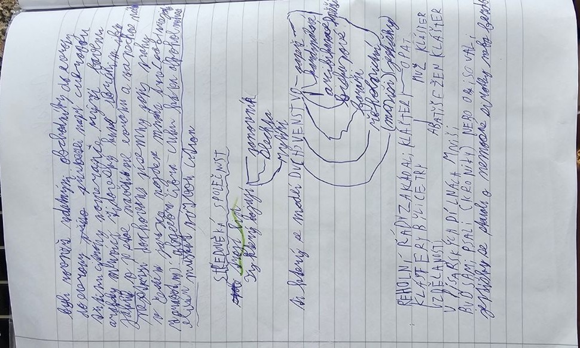
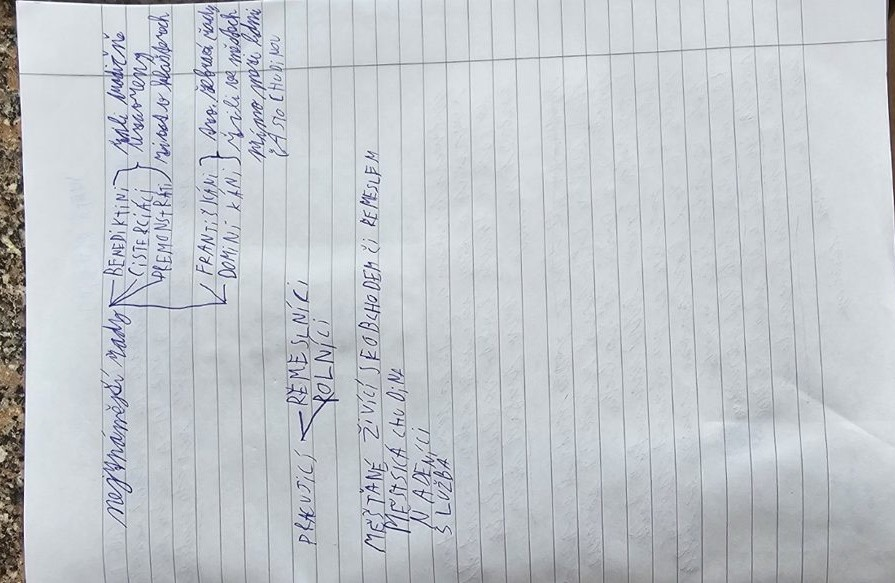

celý středověk
Středověká společnost a církev
Středověká společnost se dělila na ty, kdo bojují, kdo se modlí, a kdo pracují. Kláštery byly centry vzdělanosti: mniši v nich psali a opisovali knihy.
Zvýrazněné je v sešitě podtržené.
Tři skupiny společnosti
Středověkou společnost tvoří tři skupiny:
- Ti, kteří bojují: panovník, šlechta, rytíři.
- Ti, kteří se modlí: duchovenstvo.
- Pracující: řemeslníci a rolníci.
Proč je to důležité: každý měl své místo a svůj úkol. Šlechta chránila ostatní bojem, duchovní se za ně modlili a pracující je živili.
Ve městech žili měšťané, kteří se živili obchodem či řemeslem. Dál tam žila městská chudina, nádeníci (pracovali za denní mzdu, kde se zrovna dalo) a služba (služebnictvo).
Duchovenstvo
Duchovenstvo mělo pevné pořadí, od nejvyššího:
papež → kardinálové → arcibiskupové → biskupové → faráři (kněží)
K duchovenstvu patřili i řeholníci (mniši) a jeptišky, kteří žili v klášterech.
Kláštery a řády
Řeholní řády zakládaly kláštery. V čele mužského kláštera stál opat, v čele ženského abatyše.
Kláštery byly centry vzdělanosti. V písařských dílnách mniši buď sami psali (například kroniky), nebo opisovali knihy. Jeptišky se staraly o nemocné, sirotky a lidi bez domova.
Proč je to důležité: knihy se tehdy nedaly tisknout, každá se musela opsat ručně. Bez mnichů by se mnoho starých textů nedochovalo a z kronik víme, co se ve středověku dělo.
Nejznámější řády:
| Řád | Jak žili |
|---|---|
| benediktini, cisterciáci, premonstráti | tradičně uzavřeni mimo svět v klášterech |
| františkáni, dominikáni | tzv. žebravé řády: žili ve městech přímo mezi lidmi, často s chudinou |
Paměťový obraz
- Hrad, kostel a pole: rytíř na hradbách bojuje, kněz v kostele se modlí, rolník na poli pracuje.
- Žebřík v kostele: na nejvyšší příčce papež, pod ním kardinál, arcibiskup, biskup a dole farář.
- Mnich s brkem: v písařské dílně opisuje knihu a píše kroniku.
- Mnich s miskou na náměstí: františkán a dominikán žijí mezi lidmi ve městě.
Vyzkoušej se
Odpověz nahlas, teprve pak otevři odpověď. Procvičit náhodně
Na jaké tři skupiny se dělila středověká společnost?
Ti, kteří bojují; ti, kteří se modlí (duchovenstvo); pracující.
Kdo patřil k těm, kteří bojují?
Panovník, šlechta, rytíři.
Kdo patřil k pracujícím?
Řemeslníci a rolníci.
Seřaď duchovenstvo od nejvyššího.
Papež, kardinálové, arcibiskupové, biskupové, faráři (kněží); dále mniši a jeptišky.
Kdo stál v čele mužského a kdo ženského kláštera?
Opat a abatyše.
Co dělali mniši v písařských dílnách?
Psali kroniky nebo opisovali knihy.
Proč bylo opisování knih tak důležité?
Knihy se nedaly tisknout; bez opisů by se staré texty nedochovaly.
O koho se staraly jeptišky?
O nemocné, sirotky a lidi bez domova.
Které řády žily uzavřeny v klášterech?
Benediktini, cisterciáci, premonstráti.
Které řády byly žebravé a kde žily?
Františkáni a dominikáni; ve městech přímo mezi lidmi.
Kdo žil ve středověkých městech?
Měšťané (obchodníci a řemeslníci), městská chudina, nádeníci, služba.
Zápis ze sešitu
Fotky stránek sešitu

